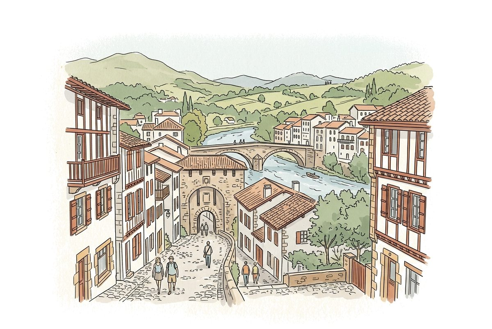
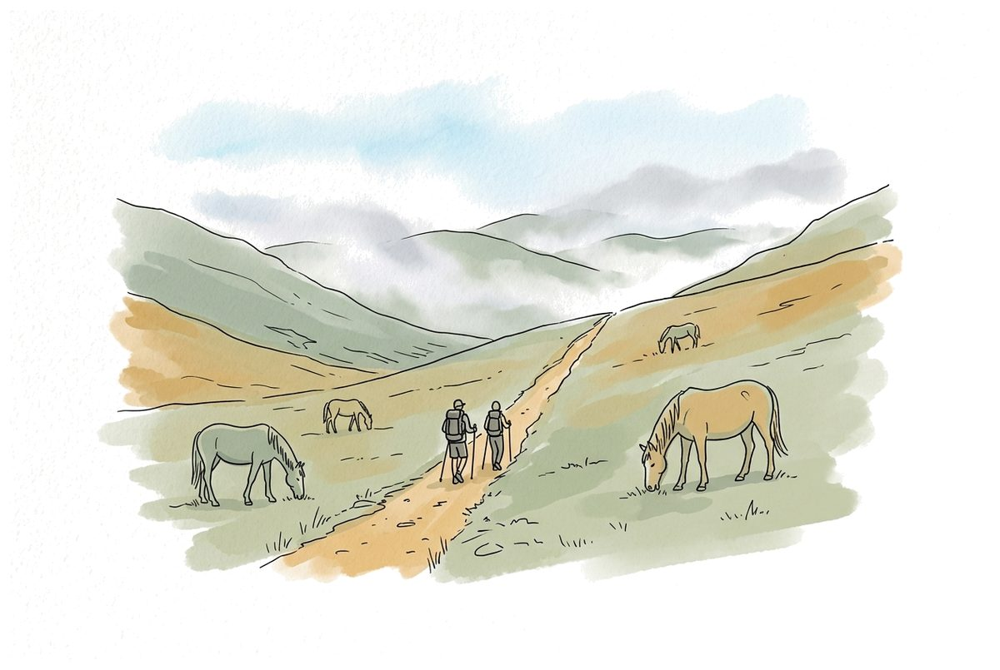
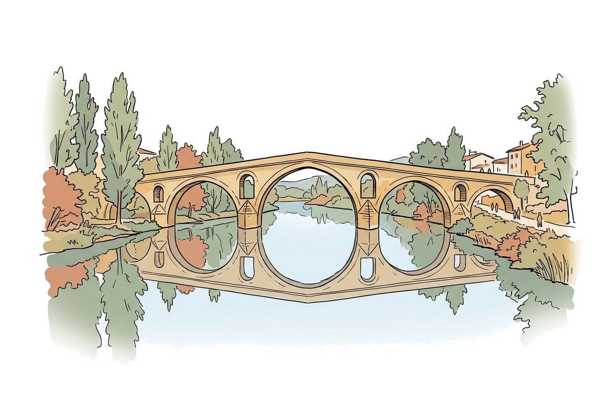
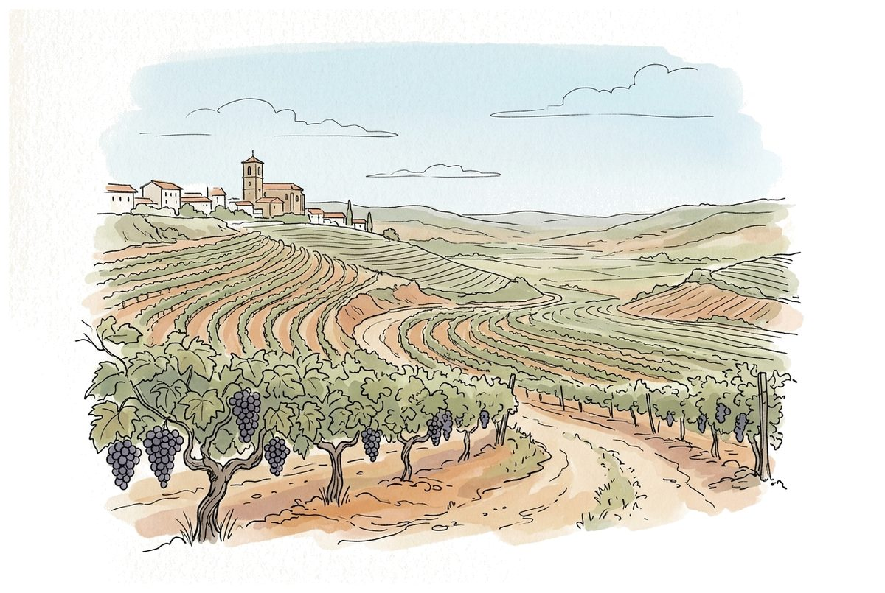
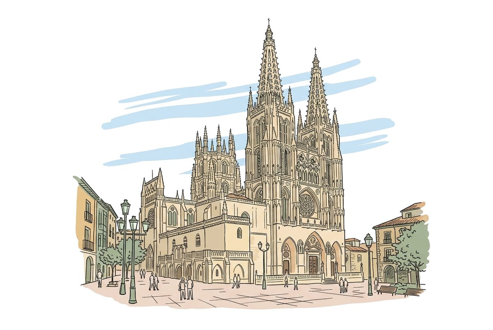
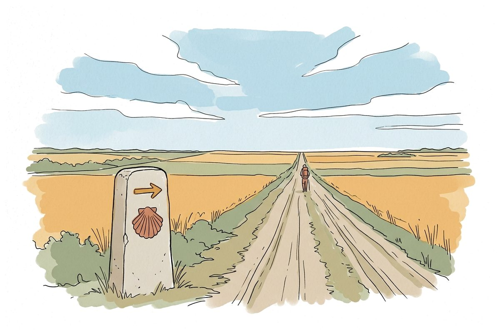
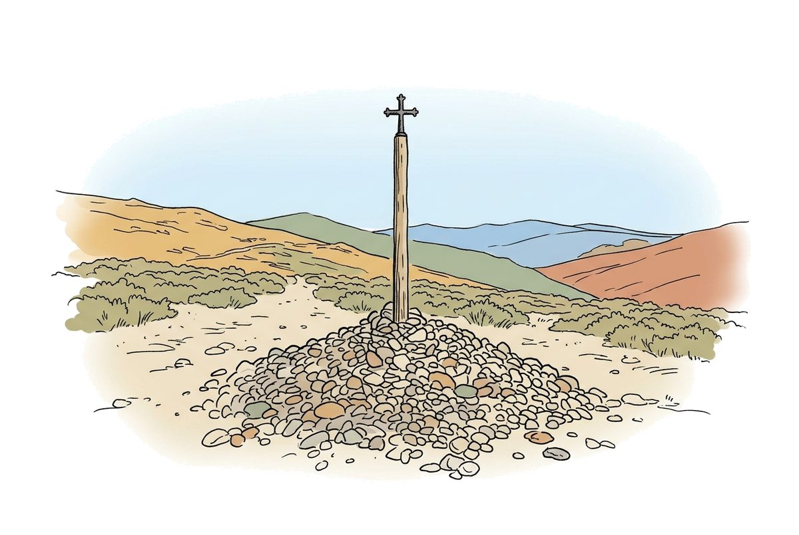
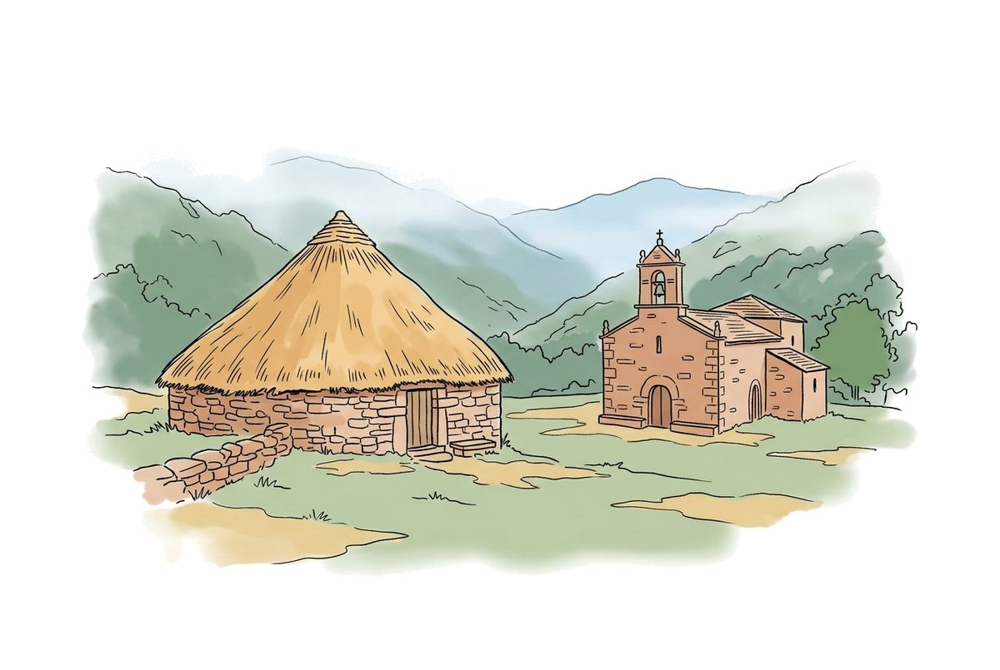
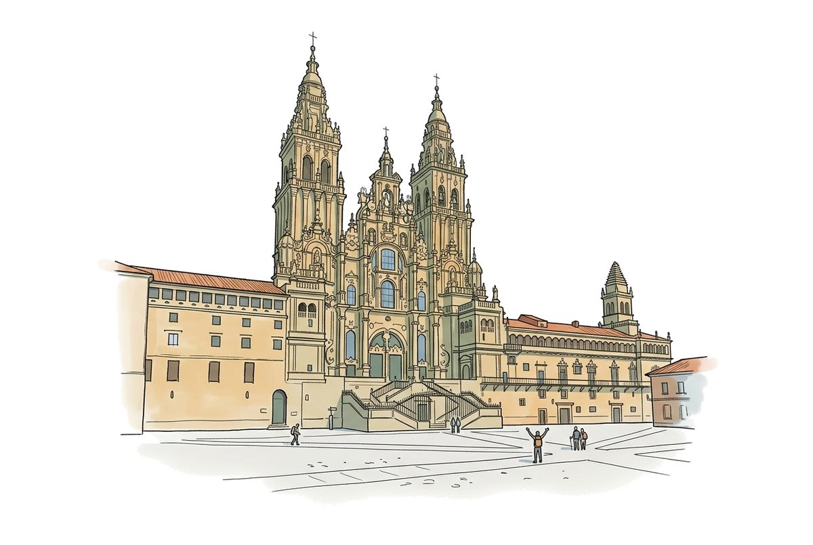

Voyage · grand public · chemin de Saint-Jacques
Pour les pèlerins francophones qui partent sur le Camino francés et veulent se débrouiller en espagnol : trouver un lit, manger, se soigner une ampoule, demander son chemin, visiter ce qu'il y a à voir d'une étape à l'autre, et parler avec les gens du pays et avec les autres marcheurs. Même châssis que la trousse de la réception d'hôtel — planches de mots, exercices, test, jeu de rôle — mais l'apprenant change de côté du comptoir : c'est lui, le client. Et le jeu de rôle devient un voyage : dix situations, dix lieux du chemin, un tampon sur la credencial à chaque fois, jusqu'à Santiago.
Je parle français → j'apprends l'espagnol du Chemin. Une direction, un voyage, une credencial à remplir.
L'écran parle français (consignes, explications, rétroactions) ; tout ce qu'on entend et qu'on dit est en espagnol. La marque reste francis, le descripteur suit la langue apprise : francis · Aide à l'apprentissage de l'espagnol, avec l'étiquette « En route vers Compostelle ».
Le fil de toute la trousse. Le chemin part de France, au pied des Pyrénées, et passe presque tout entier en Espagne : Navarre, La Rioja, Castille-et-León, Galice. Les coquilles jaunes marquent les dix situations du jeu de rôle.









Le chemin n'est pas qu'une suite d'albergues. Chaque grand lieu apporte ce qu'on y visite (et les mots pour le visiter), une phrase du lieu, et le sujet dont parlent les pèlerins ce soir-là — car les conversations du chemin changent avec les kilomètres : les jambes au début, le pourquoi sur la Meseta, l'après en arrivant.
| Lieu | À voir | Ce qu'on y dit | Entre pèlerins, ce soir-là |
|---|---|---|---|
| Saint-Jean-Pied-de-Port | la rue de la Citadelle, l'accueil des pèlerins | ¡Buen Camino! — la première fois | le sac trop lourd, la peur de la montagne |
| Roncesvalles | la collégiale, la messe des pèlerins ; Roncevaux, où tomba Roland | ¿Hay misa del peregrino? | la montée, les jambes, d'où l'on vient |
| Pamplona | la place du Château, le parcours des San Fermín, les pintxos du vieux quartier | Uno de estos, por favor | la nourriture, ce qu'on n'ose pas goûter |
| Puente la Reina · Estella | le pont roman ; la fontaine à vin du monastère d'Irache | ¿Es gratis? | le vin, les habitudes de chez soi |
| Logroño | la rue Laurel et ses bars à tapas, le vin de la Rioja | ¿Qué me recomienda? | le métier qu'on a laissé, la famille |
| Santo Domingo de la Calzada | le coq et la poule vivants dans la cathédrale, et leur légende | ¿Cuál es la historia? | les légendes, les croyances, la foi ou pas |
| Burgos | la cathédrale gothique, le tombeau du Cid | Una entrada, ¿hay descuento para peregrinos? | prendre un jour de repos ou non |
| La Meseta | Castrojeriz, l'église romane de Frómista, le ciel | ¡Qué calor! | pourquoi on marche ; le silence, la solitude |
| León | les vitraux de la cathédrale, San Isidoro, la maison de Gaudí | ¿A qué hora abre la catedral? | les blessures, les tendinites, continuer ou pas |
| Astorga | le palais épiscopal de Gaudí, le chocolat, le cocido maragato | ¿Qué es el cocido? | la cuisine de chez soi |
| Cruz de Ferro | la croix sur son mât, la pierre qu'on a apportée de chez soi | — | ce qu'on laisse derrière soi (le sujet le plus intime du chemin) |
| Ponferrada | le château des Templiers | ¿Se puede visitar? | l'histoire, les Templiers |
| O Cebreiro | les pallozas, l'entrée en Galice, la brume | ¿Cómo se dice en gallego? | la météo, les langues qu'on parle |
| Sarria · Melide | le départ des « cent kilomètres » ; le poulpe de Melide (pulpo a feira) | Una ración de pulpo para compartir | les nouveaux arrivés, le rythme de chacun |
| Santiago | l'Obradoiro, le Portique de la Gloire, l'étreinte de l'apôtre, le botafumeiro quand il vole ; puis Finisterre | ¡Lo hemos conseguido! | et après ? Le retour, ce qu'on a appris, se dire au revoir |
Les faits de ce tableau (heures, tarifs, jours du botafumeiro) se vérifient et se datent au cadrage : ils changent, et un pèlerin qui se fie à la trousse ne doit pas trouver porte close.
| La réception | En route vers Compostelle | |
|---|---|---|
| Qui apprend | Un employé, au travail, payé par l'hôtel | Un voyageur, souvent 50-70 ans, débutant complet, qui a une date de départ : il apprend chez lui, avant, puis sur le chemin |
| Son rôle | Il sert : il accueille, il explique | Il demande : ce qui compte le plus, c'est de comprendre la réponse, dite vite, avec l'accent du pays |
| Langues | Trois à égalité, six directions | Une seule direction : français → espagnol d'Espagne. Quelques mots de galicien et de basque à reconnaître sur les panneaux, sans les apprendre |
| Le lieu | Un comptoir, décor fixe | Une route : cinq ou six décors (l'albergue, le bar, la pharmacie, le sentier, le restaurant, le bureau du pèlerin), et la frise pour avancer |
| Où ça sert | Au poste, avec du réseau | Sur le chemin, souvent sans réseau : une « poche » hors ligne (phrases et sons dans le téléphone) |
| Ce qu'on réutilise | — | La mécanique entière ; l'espagnol de l'hôtel est du Mexique (cuarto, boleto, celular, jugo) : le lexique s'écrit à neuf en espagnol d'Espagne (habitación, billete, móvil, zumo) |
| Planche | Ce qu'on y trouve |
|---|---|
| Le chemin | la flèche jaune, la coquille, la borne, la credencial, le tampon, l'étape, le bâton, le sac, la montée, la fontaine (eau potable ou non), à gauche, à droite, tout droit |
| L'albergue | albergue municipal ou privé, l'hospitalero, le lit superposé, en haut ou en bas (litera), le sac de couchage, la douche, le casier, la laveuse et la sécheuse, l'étendoir, l'heure de fermeture, completo, la pension, l'hostal |
| Manger et boire | le déjeuner, le menú del peregrino, le menú del día (entrée, plat, dessert), le pain, le vin, l'eau, la bière, le café au lait, le bocadillo, la tortilla, la ración, le pincho, l'addition |
| Les heures d'Espagne | le dîner à 14 h, le souper à 21 h, la sieste, ouvert, fermé, les jours, « ¿a qué hora…? » |
| Acheter | l'épicerie, la boulangerie, le supermarché, combien, les euros, comptant, la carte, le guichet automatique |
| Le corps et la pharmacie | l'ampoule, le pansement, le genou, la cheville, la tendinite, la douleur, la crème, l'ibuprofène, la pharmacie de garde, le centre de santé, le 112 |
| Le temps qu'il fait | la pluie, la chaleur, la boue, le brouillard, l'imperméable, le poncho |
| Se déplacer | l'autobus, le taxi, le transport des sacs, la gare, le billet |
| Les gens | « ¡Buen Camino! », se présenter, remercier, s'excuser, demander de l'aide, faire répéter, « más despacio, por favor » |
| Visiter | la cathédrale, le cloître, le musée, le château, le pont, la place principale, l'entrée, le tarif réduit, la visite guidée, l'horaire, la messe, la fête, le marché, la cave à vin |
| Entre pèlerins | d'où tu viens, pourquoi tu marches, depuis quand, jusqu'où, ton métier, ta famille, les ampoules et les genoux, l'étape de demain, où tu dors ce soir, ce que tu as vu, la foi, le retour — au tú, avec les questions qui relancent (¿y tú?) |
Les pièges d'un Québécois y ont leur série : la comida est le repas de midi (notre dîner), la cena le souper ; constipado veut dire enrhumé ; embarazada, enceinte ; largo, long ; la carta, le menu, alors que el menú est le menu du jour ; el vaso, un verre ; la propina, le pourboire.
Deux formes parallèles, comme à l'hôtel, la première tirée au hasard. Il ne note pas : il règle la vitesse et l'accent des gens du pays au jeu de rôle, et dit ce qu'il reste à travailler avant le départ.
Dix situations, dix lieux, dans l'ordre du chemin. L'IA joue la personne du pays en espagnol ; le décor dessiné ne bouge pas, les gens changent devant ; le bilan, en français, dit ce qui a été fait. Chaque situation réussie met un tampon sur la credencial ; à Santiago, la Compostela.
| Lieu | Situation | Le geste qui compte |
|---|---|---|
| 1 Roncesvalles | L'albergue du premier soir | présenter sa credencial, obtenir une litera, comprendre le prix et l'heure de fermeture |
| 2 Pamplona | Le bar du matin | commander le déjeuner, comprendre le total, payer |
| 3 Puente la Reina | Perdu à la sortie du village | demander son chemin à un vieil homme qui répond vite, et le suivre |
| 4 Logroño | La pharmacie | décrire une ampoule et un genou qui fait mal, comprendre la posologie |
| 5 Burgos | « Completo » | l'albergue est plein : comprendre la solution proposée, puis téléphoner à une pension, sans visage |
| 6 Carrión de los Condes | Une pèlerine sur la Meseta | tenir deux minutes de conversation : se présenter, d'où, pourquoi, au tú |
| 7 León | Le menú del peregrino | choisir entrée, plat, dessert ; dire une allergie et comprendre la réponse ; l'addition |
| 8 O Cebreiro | La pluie et le sac | comprendre la météo annoncée, faire transporter son sac à l'étape suivante |
| 9 Sarria | Les cent derniers kilomètres | les deux tampons par jour, l'épicerie pour le pique-nique, les prix au poids |
| 10 Santiago | Le bureau du pèlerin | répondre aux questions pour la Compostela : son nom, d'où l'on est parti, pourquoi |
Un compagnon de route. Entre les situations, une même pèlerine, rencontrée à Roncesvalles, revient d'étape en étape — au souper de l'albergue, sur un banc, à la fontaine. Chaque fois, deux minutes de conversation sur le sujet du lieu (colonne « Entre pèlerins » plus haut) : les jambes, la nourriture, pourquoi on marche, ce qu'on laisse à la Cruz de Ferro, et, à Santiago, se dire au revoir. Elle se souvient de ce qu'on lui a dit la fois d'avant. Et à chaque ville, une petite question de visite (une entrée, un horaire) s'ajoute à la situation du jour.
Trois paliers de gens du pays, réglés par le test : lent et patient (une autre pèlerine, étrangère elle aussi), normal, et rapide, avec l'accent (le vieil homme du village). Une erreur y est éliminatoire, et le dira d'avance : l'allergie non dite, ou la réponse du serveur mal comprise.
Sur le chemin, le réseau manque souvent. Le site s'installe déjà sur le téléphone (il est installable) ; la poche y ajoute, gardés en mémoire : les phrases de chaque lieu avec leur son, la frise où l'on coche l'étape du jour, et un bouton « Dites-le plus lentement » en espagnol à montrer à l'écran. Le jeu de rôle, lui, a besoin du réseau : il se fait avant le départ.
| Étape | Ce qui sort | Séances |
|---|---|---|
| 0. Cadrage | Vos décisions (plus bas), les objectifs mesurables, le lexique arrêté, les voix d'Espagne auditionnées, trois croquis témoins, les faits du chemin vérifiés. | 1 |
| 1. Les mots | ≈ 190 croquis, onze planches, voix, traduction. | 3 |
| 2. Les décors | Six décors du chemin, les gens du pays (cinq visages, quatre expressions), la frise et la credencial. | 2 |
| 3. Les exercices | Les huit familles. Point d'arrêt : jouable par un pèlerin. | 2 |
| 4. Le test | Deux formes nivelées. | 1 |
| 5. Le chemin joué | Dix situations en trois paliers, les conversations du compagnon de route, le bilan en français. | 3 |
| 6. La poche | Le mode hors ligne, la frise à cocher. | 1 |
| 7. Audit et pilote | La boucle didactique (au moins trois tours), puis quelques pèlerins qui partent pour vrai. | 2 |
| 8. L'emballage | Le carnet de poche à imprimer, la page de présentation, la fiche au classeur. | 1 |
Trois limites à dire tout de suite : l'espagnol doit être relu par une personne d'Espagne avant d'être offert. Les faits du chemin (heures, règles du bureau du pèlerin, les deux tampons par jour des cent derniers kilomètres) se vérifient au cadrage et se datent : ils changent. Et c'est la première trousse grand public : elle ne se vend pas comme une formation en entreprise — la question de sa diffusion est la dernière décision.
Chacune a une recommandation ; un clic la retient. Le bouton du bas rend un texte à recoller dans la conversation : c'est lui qui pilote la suite.
Plan du 25 septembre 2026 · « En route vers Compostelle ».
Produit par build/compostelle_plan.py — ne pas l'éditer.